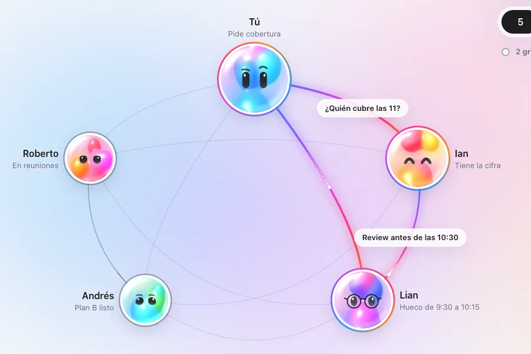
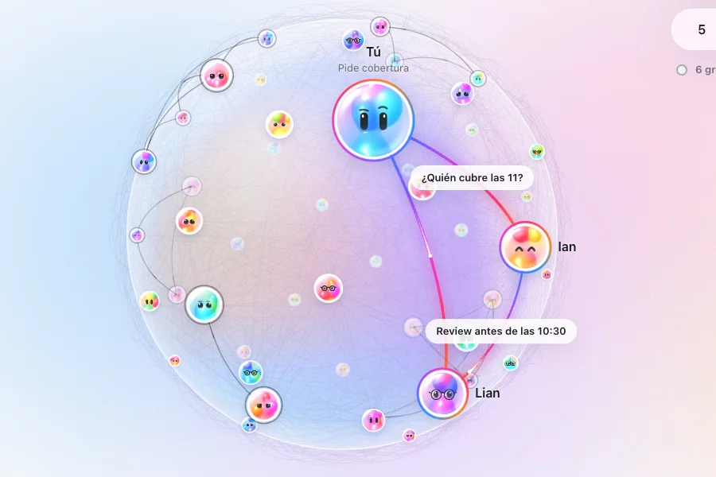
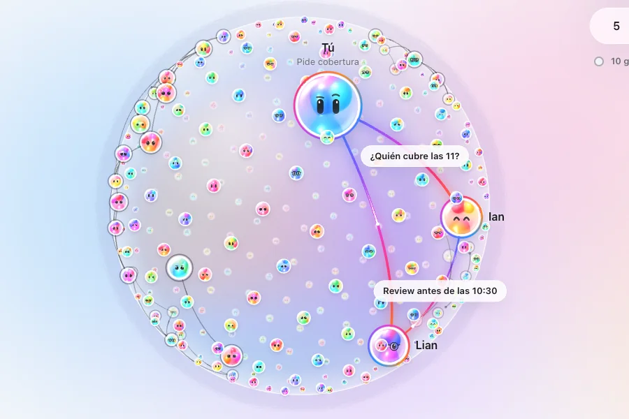

Aura: una lámpara de lava por persona
Cada persona es una gota de vidrio con su propia luz adentro: masas de color que suben, se estiran, se funden y se separan. Abajo, tres maneras de ponerle cara, con las mismas pruebas.
Archivo del 21-nov. Mati eligió los ojos: las caras del producto, con sus estados, están en caras.html. La luz del globo es esta misma lava.
Ojos: la luz es la persona.
Deja ver toda la lava, que es lo que más gusta, y le da vida con muy poco: forma de los ojos, anteojos, hacia dónde miran y un parpadeo. La otra opción con oficio es Vita de luz.
La luz
WebGL2, sin libreríasCinco gotas a 184 px. Cada una mezcla cuatro tonos de una rueda de quince.
Ojos en el globo real
Capturas de grafo/globo.htmlEl globo con las siete imágenes de faces/ cambiadas por Ojos. En estas capturas las caras están quietas; la luz de la esfera sí se mueve en el globo.



Descartadas después de verlas: Tinta y la cara dibujada sobre la gota (se veían sin terminar), el retrato de vidrio (se ve genérico), Vita Faces en vidrio (casi no cambia) y el monograma. La luz sale de luz/luz.js; con menos movimiento queda quieta, y sin WebGL2 queda una mezcla fija.